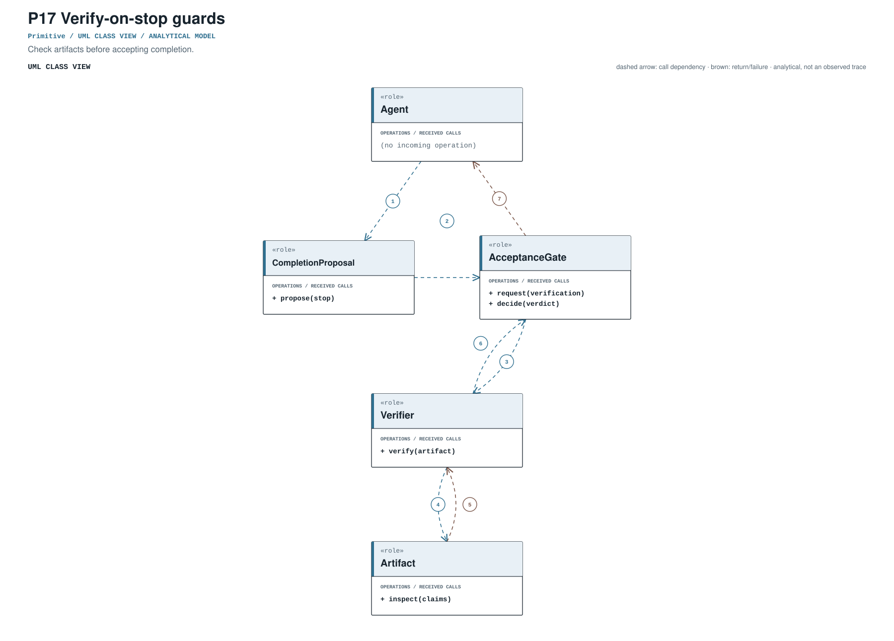
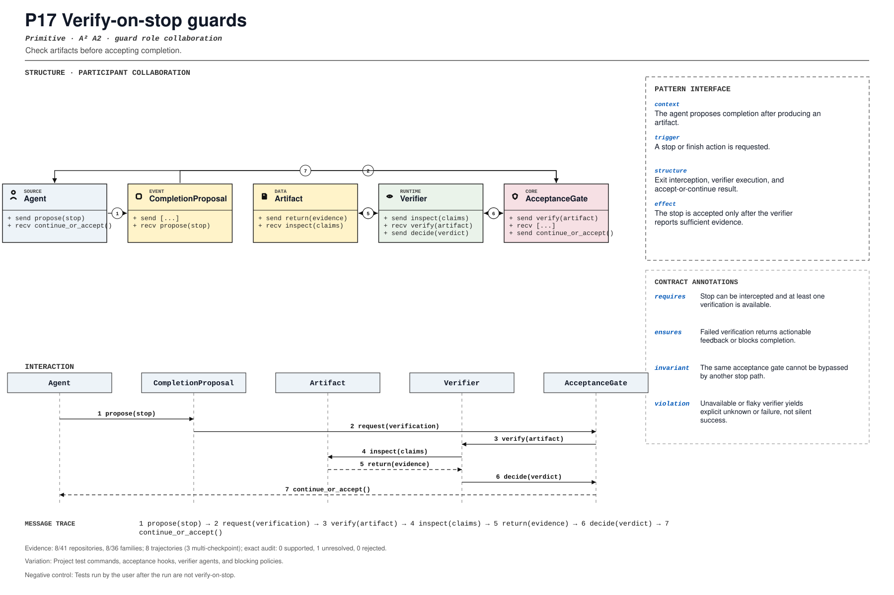

PROMPT SKETCH
Do not accept completion until the artifact has passed the configured verification. A failed check must return actionable feedback or block the stop; an unavailable verifier is unknown, never success.Check artifacts before accepting completion.
terminal_acceptance_interceptionRECORD STATUSCandidate · v0.1.0The proposed contract drawn as participant roles, received calls, and numbered dependencies.

The same roles and calls as a class collaboration and a numbered message sequence.

Where the mechanism applies. All four dimensions belong to the proposed match, not just its vocabulary.
The obligation that clients, operators, and auditors should be able to rely on.
Tests run by the user after the run are not verify-on-stop.
The hot spot is admitted only where the protected semantics survive.
Project test commands, acceptance hooks, verifier agents, and blocking policies.
Test pass, fail-and-continue, verifier error, repeated stop, and bypass route.
Did completion verification become mandatory rather than advisory?
An illustrative prompt and a small design sketch for the proposed contract. Names and APIs are invented; this is not a repository excerpt.
Do not accept completion until the artifact has passed the configured verification. A failed check must return actionable feedback or block the stop; an unavailable verifier is unknown, never success.def guarded_stop(agent, proposal, verifier):
if not proposal.requests_stop:
return agent.continue_run()
verdict = verifier.check(proposal.artifact)
if verdict.passed:
return agent.accept(proposal, evidence=verdict.evidence)
if verdict.unknown:
return agent.block(proposal, reason="verification unavailable")
return agent.continue_run(feedback=verdict.feedback)Illustrative design sketch. The gate, not the completed status, is the acceptance authority. This example is a teaching aid, not implementation evidence or a conformance claim.
The frozen rule that retrieves this record, the canonical source exemplar, and the control that should stay unmatched.
terminal_acceptance_interception(?i)\b(?:verify[_-]?on[_-]?stop|before[_-]?stop|stop[_-]?verif|completion[_-]?check|acceptance[_-]?check)\bFrozen expression, v0.1.0. A match is a retrieval cue, not a confirmed implementation.harnessx/processors/control/self_verify.py:95Support: tests/unit/test_processor_triggers.py:336Scope-anchored review. pohe-agent analyze <repo> --pattern P17 anchors the cue to its enclosing declaration and checks a separate operational signature for all four pointcut dimensions. Missing roles and negative-control risks remain visible; a structural match is not E2/E3. Calibration report ↗
Up to five public files retrieved by the frozen cue and pinned to the audited commit. A match is a place to inspect, not a confirmed implementation.
harnessx/processors/control/self_verify.py:95CANONICAL SOURCE02agno-agi/agnolibs/agno/agno/os/routers/schedules/router.py:61RETRIEVAL CUE03mastra-ai/mastrapackages/core/src/stream/base/output.ts:253RETRIEVAL CUE04openclaw/openclawsrc/agents/embedded-agent-runner/run/attempt-stream-prepare.ts:105RETRIEVAL CUE05stablyai/orcasrc/main/native-chat/agent-session-wire/recovery/structured-agent-session-restart-resume-host.ts:294RETRIEVAL CUEEach layer answers a different question. Do not substitute retrieval for review.
A concrete source anchor is available for this proposed record. It is one exemplar, not evidence that all repositories—or every contract field—conform.
Review boundary: this candidate and its specification come from an AI-assisted study. Independent human validation remains open.
22.2% of repository families in the frozen panel have at least one current cue, historical cue, or canonical source layer. This is not confirmed prevalence.
Current lexical-cue repositories: 7 / 41ccb411691343harnessx/processors/control/self_verify.py:95tests/unit/test_processor_triggers.py:336Task-end self-verification processor.
(?i)\b(?:verify[_-]?on[_-]?stop|before[_-]?stop|stop[_-]?verif|completion[_-]?check|acceptance[_-]?check)\bThis expression is a discovery instrument only. A match is a retrieval cue—not a confirmed implementation, pointcut match, or contract proof.